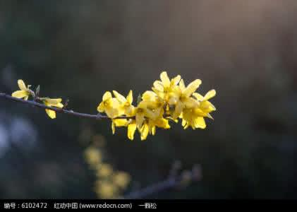
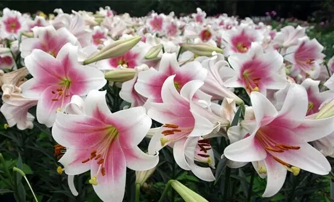

首页-->花材
(一) 哪些材料可用于插花
只要具备观赏价值,能水养持久或本身较干燥，不需要水养也能观赏较长时间的，都可以用来插花。当然插花的材料不止限于活的植物材料，有时某些枯枝及干的花序，果序等也具有美丽的形态和色泽，同样可以插花，此外，各种各样的蔬菜和水果也可以作为素材像黄瓜、南瓜、茄子、苹果、香蕉等都可用来插花。现在的花卉市场上还有许多人工加工的干花，也是很好的插花材料，他们虽然没有鲜花那样水灵和富有生机，但却具有独特的自然色泽何止低，或者倍加工成独特的色彩．另外，还有各种质地的人造花，如绢花，塑料花，纸花，金属花等等，用它们做成的插花作品摆放在居室，既能起到花卉的装饰作用，又比较经济实惠，且易于管理。
(二) 切花选购要求
(1)花枝越长越新鲜。为保持新鲜，提高吸水性能，花店每天都要将切花枝茎的下端剪去一段。因此，茎越长的花越新鲜。 (2)观察花材的整体形态。凡是叶面稍有萎焉，发黄或浸入水中的花茎，叶片变成褐色，黑色的花枝，新鲜度差，不宜购买。 (3)用手触摸水中的花枝。用手触摸花枝水中的枝茎部分，有滑溜溜的感觉，说明花枝已留放了5-6天，新鲜度差，不宜购买。(4)花朵大部分全开的不宜购买。(5)花型过小不宜购买。花型过小的原因，有时可能是将外围残缺的花瓣去除所至。(6)花色应鲜艳。花瓣应有弹力，颜色应鲜艳。上述所说的不宜购买，仅限于用于参加插花比赛或是卖给客户的插花作品材料。您若是喜欢将花儿插在瓶中摆放于客厅、餐桌或其他地方，上述的鲜花还是可以选择的，不仅价格实惠花期也还可以存放许久
(三) 花材形态

线形花（线状花）LineFlower
整个花材呈长条状或线状。利用直线形或曲线形等植物的自然形态，构成造型的轮廓，也就是骨架。例如：金鱼草、蛇鞭菊、飞燕草、龙胆、银芽柳、连翘等。
定形花（形式花）FormFlower
花朵较大，有其特有的形态，是看上去很有个性的花材。作为设计中最引人注目的花，经常用在视觉焦点。本身形状上的特征使它的个性更加突出，使用时要注意发挥它的特性。例如：百合花、红掌、天堂鸟、芍药等。
线形花（线状花）LineFlower
整个花材呈长条状或线状。利用直线形或曲线形等植物的自然形态，构成造型的轮廓，也就是骨架。例如：金鱼草、蛇鞭菊、飞燕草、龙胆、银芽柳、连翘等。
定形花（形式花）FormFlower
花朵较大，有其特有的形态，是看上去很有个性的花材。作为设计中最引人注目的花，经常用在视觉焦点。本身形状上的特征使它的个性更加突出，使用时要注意发挥它的特性。例如：百合花、红掌、天堂鸟、芍药等。
簇形花（块状花）MassFlower
花朵集中成较大的圆形或块状，一般用在线状花和定形花之间，使完成造型的重要花材。没有定形花的时候，也可用当中最美丽、盛开着的簇形花代替定形花，插在视觉焦点的位置。例如：康乃馨、非洲菊、玫瑰、白头翁等。
填充花（散状花）FillerFlower
分枝较多且花朵较为细小，一枝或一枝的茎上有许多小花。具有填补造型的空间、以及花与花之间连接的作用。例如：小菊、小丁香、满天星、小苍兰、白孔雀等。
(四) 因时取材

春季
芳香诱人、色彩鲜艳的花，以及嫩叶幼芽，都是良好的花材。如：木本的桃花、碧桃、榆叶梅、玉兰、山茶、贴梗海棠；灌木类的迎春、连翘等，还有最富春天气息的柳枝，在配以草本的郁金香、百合、芍药、鸢尾、铃兰、香石竹、紫罗兰等。
夏季
夏天可以选用新绿的花材为宜，可表现出清新幽雅。大红大绿让人感到烦躁，应以清淡肃静的花材为主，如：燕子花、满天星、大丽花等
春季
芳香诱人、色彩鲜艳的花，以及嫩叶幼芽，都是良好的花材。如：木本的桃花、碧桃、榆叶梅、玉兰、山茶、贴梗海棠；灌木类的迎春、连翘等，还有最富春天气息的柳枝，在配以草本的郁金香、百合、芍药、鸢尾、铃兰、香石竹、紫罗兰等。
夏季
夏天可以选用新绿的花材为宜，可表现出清新幽雅。大红大绿让人感到烦躁，应以清淡肃静的花材为主，如：燕子花、满天星、大丽花等
秋季
丰收的季节常用的花材有：红枫、银杏、乌桕的树叶。清香的桂花，以及表现出刚劲有力的石榴、板栗、柿子、葡萄等，草本的千日红、雁来红、傲霜的秋菊等等。
冬季
天气寒冷，人们在室内活动增加，又是春节前后，所以应选用象征丰收喜悦、祝福万事如意的色彩浓艳的花材，如金橘、冬珊瑚、南天竺、腊梅、万年青、银芽柳、一品红等。